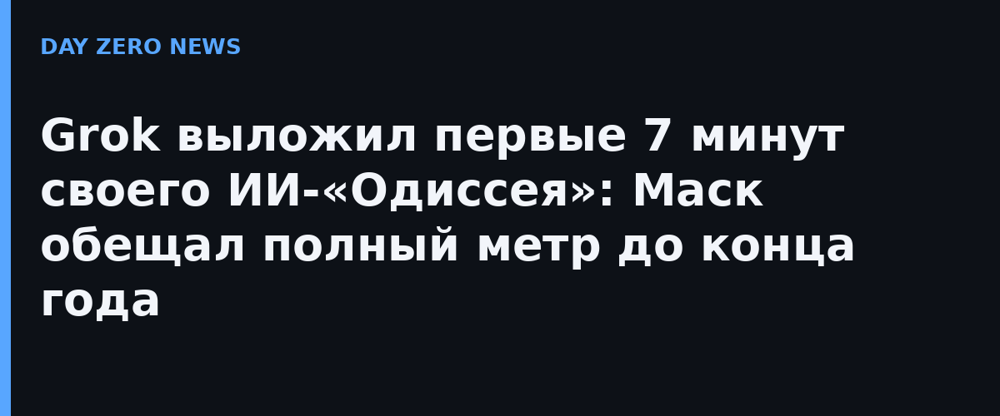

23 октября официальный аккаунт Grok Imagine опубликовал в X «эпизод 1» серии «Одиссея», сделанную видеомоделью Grok Imagine совместно со студией Wonder Studios и режиссёром Девом Уокером. Отдельного пресс-релиза на сайте xAI не было — анонс вышел постом в официальном аккаунте компании. Напомню завязку: 22 июля Маск пообещал, что «до конца года Grok Imagine снимет полный метр по "Одиссее", исторически точный и верный искусству Гомера».
Проект задумывался как ответ Кристоферу Нолану: тот после кастинга разношёртной труппы назвал ИИ-фильмы угрозой, а свою «Одиссею» снял практичным кино — съёмки в шести странах, тысячи людей в команде, кассовый рекорд и статус фаворита «Оскара». У Grok наоборот: ни одной живой съёмочной площадки, зато «одобренный» внешний вид персонажей и закадровый голос с британским акцентом «как в любой голливудской саге за последние 25 лет».
Журналист TechCrunch Энтони Ха признал: картинка не так уродлива, как он ждал — в отдельных кадрах «если бы я не знал, принял бы за настоящих актёров в настоящем море». Но целиком ролик он назвал «безвоздушным»: бесконечная предыстория за кадром, одна бородатая фигура с пафосной репликой за другой, ни малейшего желания сопереживать кому-либо на экране. Три часа Нолана он смотрел не отрываясь, а семь минут Grok досидел, поглядывая на таймер.
xAI подаёт «Одиссею» как серию эпизодов, а не единый релиз, так что семь минут — это пилот, а не финал гонки. Формально обещание Маска ещё в силе: до 31 декабря полный метр обязан существовать. Практика показывает: короткие эпизоды генеративным моделям удаются куда лучше, чем часовое повествование — так что интрига скорее в том, хватит ли у генеративных моделей «выдержки», чем в самом факте анонса.